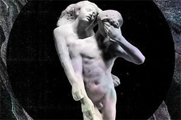

News
+ Beyonce Releases Surprise "Visual Album" |
|---|

Top Picks
|
|---|

Albums of 2013 |
|---|
Kanye West - Yeezus
The album is something of a razor-sharpened take on 2008's distressed 808s & Heartbreak and marks a blunt break with the filigreed maximalism Kanye so thoroughly nailed on My Beautiful Dark Twisted Fantasy. In hindsight, the latter record-- with its ingratiating GOOD Fridays buildup, endless guest list, and uncharacteristically apologetic interview sessions-- was his attempt at recapturing a superstar-sized American audience after a slew of entertaining-yet-questionable PR incidents. Except it didn't exactly work: While Twisted Fantasy was universally lauded and went platinum, it still stands as Kanye's worst-selling album to date, failing to produce a top 10 single. But even if it wasn't a chart smash, the intricacy and durability of Twisted Fantasy incubated the Cult of Kanye to an extreme level. "I’d rather piss a bunch of people off and make myself happy than make everyone else happy and be pissed off inside," he told VIBE around the release of 808s. Yeezus doubles-down on this exclusionary philosophy: "Soon as they like you, make 'em unlike you/ 'Cause kissing people ass is so unlike you."
For Kanye, there's purpose in repulsion. And on Yeezus, he trades out smooth soul and anthemic choruses for jarring electro, acid house, and industrial grind while delivering some of his most lewd and heart-crushing tales yet. This is willful provocation that Ice Cube, Madonna, and Trent Reznor could all be proud of. Some of the record has him tackling the same issues he's been rapping about since The College Dropout, albeit with a fire-eyed stare. On his debut's "Family Business", he poignantly lamented a jailed cousin's absence at the Thanksgiving dinner table in a manner "so sweet, like a photo of your granny's picture." On Yeezus, he's still addressing the plight of incarcerated black men, but now he's incensed. With "New Slaves", he confronts us with vulgar stereotypes while exposing the prison-industrial complex for the deeply systemic racist sham that it is.